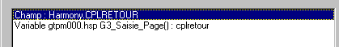
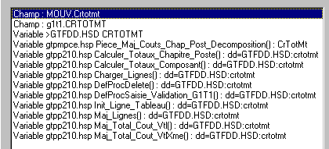

Lors d'une requête de navigation, il peut y avoir ambiguïté.
En effet, plusieurs modules peuvent contenir une fonction de même nom, le même champ peut apparaître dans plusieurs enregistrements, le même nom de donnée peut être utilisé dans plusieurs fonctions etc.
En cas d'ambiguïté, Xwin ouvre une boîte de dialogue permettant de préciser la demande.
La liste de gauche contient toutes les différentes entités qui répondent à la requête.
Vous pouvez sélectionner une (ou plusieurs) ligne(s) de cette liste. Le bouton Tous (raccourci clavier T) vous permet de sélectionner toutes les lignes.
Exemple 1 : CplRetour

CplRetour
est un champ de l'enregistrement Harmony
est une variable locale de la fonction G3_Saisie_Page
Exemple 2 : Crtotmt

Ctrtomt
est un champ de l'enregistrement Mouv
est un champ de l'enregistrement g1t1
des données sont déclarées en utilisant Ctrtomt comme modèle
est une variable locale de Piece_Maj_Couts_Chap_Post_Decomposition
est une variable locale de Calculer_Totaux_Chapitre_Poste
etc.
Voir également :